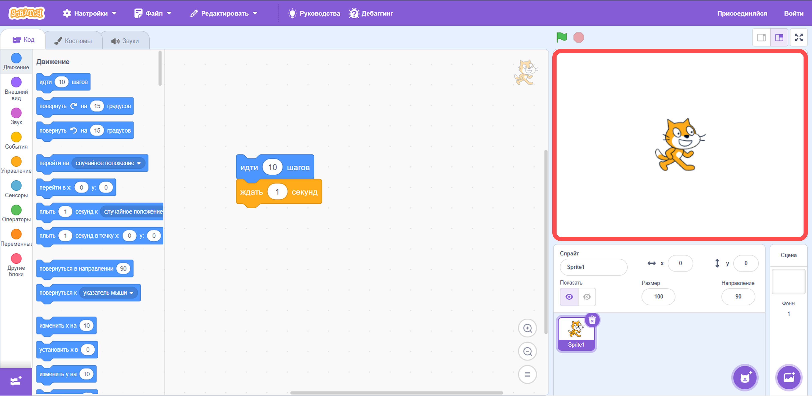
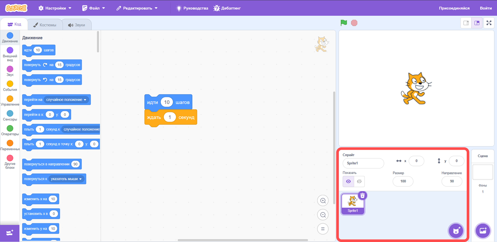
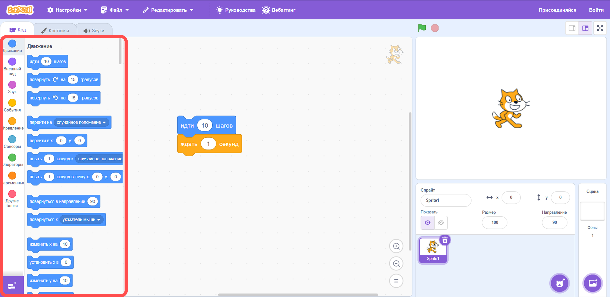
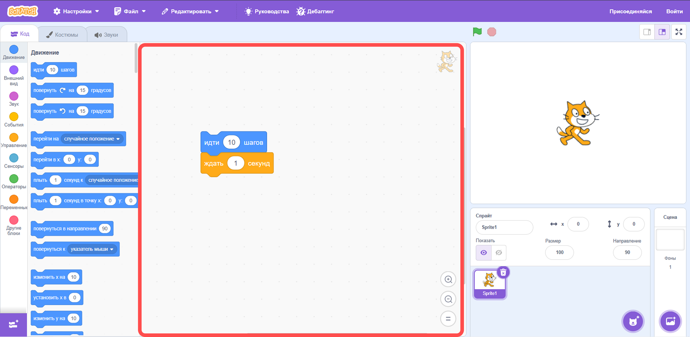

Среда программирования Scratch 2.0. История и интерфейс среды Scratch 2.0
Среда программирования Scratch 2.0. История и интерфейс среды Scratch 2.0
Что такое Scratch
Scratch — это среда программирования, в которой можно создавать игры, мультфильмы и интерактивные истории, собирая команды как детали конструктора.
В Scratch не нужно писать сложный код — программы собираются из цветных блоков, которые легко соединяются между собой. Scratch создан специально для детей и начинающих пользователей.
Зачем нужен Scratch
С помощью Scratch можно:
- научиться думать как программист;
- понять, как работают алгоритмы;
- создавать первые проекты: игры, анимации и истории;
- научиться работать с логикой, условиями и повторениями.
Главная мысль
Scratch — это первый шаг в мир программирования. Он помогает понять основы алгоритмов через игру, творчество и простые визуальные команды.
Краткая история Scratch
Scratch был создан для того, чтобы программирование стало понятным и интересным для детей и начинающих. В этой среде можно не бояться ошибок, экспериментировать и сразу видеть результат своей программы.
Scratch помогает:
- изучать программирование через творчество;
- создавать проекты без сложного текстового кода;
- развивать логическое мышление;
- работать с алгоритмами, событиями и действиями персонажей.
Со временем Scratch стал популярным во всём мире. Его используют в школах, кружках робототехники и на занятиях по информатике.
Как создаётся программа в Scratch
Программа в Scratch собирается из блоков. Каждый блок отвечает за отдельную команду: движение, внешний вид, событие, управление или вычисление.
Интерфейс Scratch 2.0
Интерфейс Scratch состоит из нескольких основных частей. Каждая часть нужна для создания и запуска проекта.
1. Сцена
Сцена — это место, где происходит всё действие: движутся персонажи, появляются анимации и отображается результат программы.

Сцена Scratch 2.0
2. Спрайты
Спрайты — это персонажи или объекты программы. Ими можно управлять с помощью команд.

Область спрайтов в Scratch 2.0
3. Область блоков
В области блоков находятся команды, из которых собирается программа. Блоки разделены по категориям и имеют разные цвета.

Блоки команд в Scratch 2.0
4. Рабочая область
Рабочая область — это место, где пользователь соединяет блоки и создаёт алгоритм.

Рабочая область Scratch 2.0
Цвета блоков в Scratch
Блоки в Scratch имеют разные цвета. Каждый цвет отвечает за свой тип команд.
Основные группы блоков Scratch
| Цвет блока | Группа команд | Для чего используется |
|---|---|---|
| Синий | Движение | Позволяет перемещать спрайт, поворачивать его и задавать координаты. |
| Фиолетовый | Внешний вид | Используется для изменения костюмов, реплик и внешнего вида персонажа. |
| Жёлтый | События | Запускает программу при нажатии на флажок, клавишу или другое событие. |
| Оранжевый | Управление | Используется для циклов, ожидания и условий. |
| Зелёный | Операторы | Помогает выполнять сравнения, вычисления и логические действия. |
Практический блок
Практическая часть занятия направлена на закрепление знаний о среде Scratch 2.0, её интерфейсе, возможностях и основных элементах программы.
Задание 1. «Что можно и нельзя»
Распределите карточки по группам в зависимости от того, можно ли это создать в Scratch или нет.
- Внимательно прочитайте каждую карточку.
- Определите, можно ли создать такой проект в Scratch.
- Распределите карточки по подходящим группам.
- Сделайте вывод, для каких задач подходит Scratch.
Пройдите задание в интерактивном формате:
Задание 2. «Сопоставь пары»
Соотнесите картинку и определение, которое подходит к изображённому элементу интерфейса Scratch.
- Рассмотрите изображение.
- Прочитайте предложенные определения.
- Подберите к каждой картинке правильное описание.
Пройдите задание в интерактивном формате:
Задание 3. «Место, персонаж, действие»
Определите, что относится к месту действия, что является персонажем, а что описывает действие в программе.
- Прочитайте предложенные элементы.
- Определите, где находится место действия.
- Найдите персонажа.
- Выберите действие, которое должен выполнить персонаж.
Пройдите задание в интерактивном формате:
Задание 4. «Собери программу: кот здоровается и делает шаг»
Расположите блоки так, чтобы программа работала по алгоритму: когда нажмём зелёный флажок → кот скажет «Привет!» → кот сделает шаг вперёд.
- Найдите блок запуска программы.
- Добавьте команду, чтобы кот сказал «Привет!».
- Добавьте команду движения.
- Проверьте правильный порядок блоков.
Пройдите задание в интерактивном формате:
Задание 5. «Что будет, если…»
Соедините ситуацию и результат. Задание помогает понять, как команды и события влияют на выполнение программы.
- Прочитайте ситуацию.
- Подумайте, какое действие произойдёт в Scratch.
- Соедините ситуацию с правильным результатом.
Пройдите задание в интерактивном формате:
Задание 6. «Правда или нет?»
Отметьте утверждения, которые являются верными. Это задание помогает повторить основные сведения о Scratch и его интерфейсе.
- Прочитайте каждое утверждение.
- Определите, верно оно или нет.
- Проверьте себя и исправьте ошибки.
Пройдите задание в интерактивном формате: